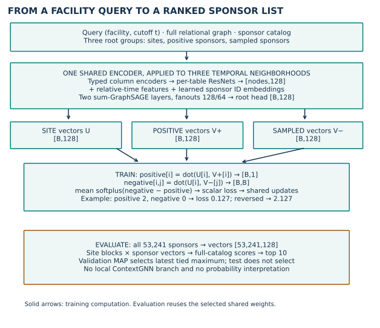
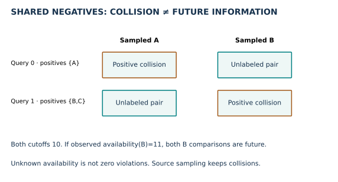
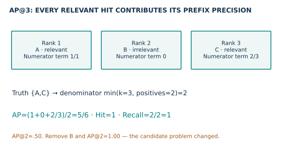
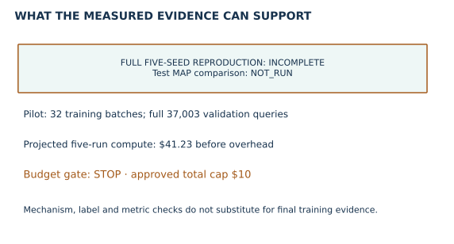

Year 4 · Quarter 4 · Lesson 153
Recommendation portfolio: rank candidates without temporal leakage
1 · From one answer to an ordered list¶
Reading route. Fix the candidate population → trace shared encoders → audit sampled negatives → calculate AP → report completion.
Your win: produce portfolio entry 3 with a defensible candidate population, ranking metric, temporal audit and reproduction verdict. The core lesson takes about 20 minutes; the lab and optional full experiment are separate sessions.
Lesson 151 ranked binary outcomes using a classification score; Lesson 152 asked for a scalar. A recommendation query asks which candidates belong near the top. An apparently better score can come from removing difficult candidates, even if the model never changes. That is the new failure mode this entry must rule out.
Prerequisites: (entity, cutoff) query keys from Lesson 124, temporal neighborhood ownership from Lesson 123, and local-versus-global candidate scoring from ContextGNN, Lesson 144.
The task is rel-trial/site-sponsor-run: for a facility at cutoff t, rank sponsors that will run a study there during the next 365 days. A query may have several relevant sponsors. “Site” means a clinical-trial facility here, not a website. This is a retrospective benchmark prediction task, not a clinical decision tool. RelBench task definitions
2 · Define the population before the score¶
The released label joins facility–study events to sponsor–study links, collecting distinct sponsor IDs whose facility event lies in (t, t + 365 days]. Source filtering removes dangling entity IDs. The join does not require the sponsor–study row's date to lie in that interval. The label audit must reproduce this actual rule; a plausible rewrite could define a different task. Pinned task source
The current archive contains 669,310 / 37,003 / 27,428 train / validation / test queries, with 53,241 sponsor candidates. We rank against the released full catalog. Source evaluation uses each split boundary as the neighborhood cutoff; the audit checks its agreement with task-query times. Matching current archive hashes does not establish that these are the authors' historical bytes.
The task tables contain queries with positive future labels. Thus these metrics describe the benchmark's active-query population; they do not measure performance for every facility with no future activity. Global sponsor identity is insufficient for alignment: use (facility_id, cutoff) for labels and rankings.
3 · Model architecture: shared representations, pairwise training¶
The selected published baseline is RelBench GraphSAGE, using the two-layer recipe from Table 9. This continues the familiar typed row encoder → temporal graph → head pipeline, but the head now returns a 128-dimensional vector. It does not output a probability or regression scalar. RelBench implementation and hyperparameters
Follow the computation
One shared encoder trains from pairwise comparisons
- 1
Form three root groups
Facility queries, positive sponsors and sampled sponsors each get temporal neighborhoods.
- 2
Reuse the same encoder
Typed encoders and two sum-GraphSAGE layers emit 128-coordinate vectors.
- 3
Compare positive and sampled scores
For each query, dot products feed softplus(negative − positive).
- 4
Rank the full sponsor catalog
Selected weights encode all 53,241 sponsors; score blocks and retain top ten.
Open the decisive operation
If the positive score is 2 and the negative score is 0, does reversing them increase the loss?
Yes: softplus(−2) ≈ 0.127 becomes softplus(2) ≈ 2.127.
Trace answer: Yes: softplus(−2) ≈ 0.127 becomes softplus(2) ≈ 2.127.
Recommendation portfolio path. Scores are ranking quantities, not calibrated probabilities.


Read the notation. A batch is a group processed together; B is its size. An embedding is a learned vector, and a dot product multiplies corresponding coordinates and adds them: [1,2] · [3,4] = 11. A ResNet uses shortcut additions between neural layers. A fanout limits sampled neighbors at one hop. “Shared weights” means applying the same learned transformation to all three root groups, not fitting three separate encoders.
A batch shares cutoff t. Sample one positive sponsor per query and a pool of B uniformly sampled sponsors. Encode the site, positive sponsor and sampled sponsor neighborhoods with the same model weights. Each table uses a four-layer, width-128 Frame ResNet before graph propagation. Sponsor rows also receive a learned ID embedding. Scores are dot products: positive[i] = dot(site[i], positive_sponsor[i]); negative[i,j] = dot(site[i], sampled_sponsor[j]).
Softplus is the smooth positive function log(1 + exp(x)). BPR, Bayesian personalized ranking, names the pairwise objective: penalize a sampled candidate scoring above the positive. Here i indexes queries and j indexes the shared sampled candidates.
The loss averages softplus(negative[i,j] − positive[i]) over B×B pairs. If positive score=2 and negative score=0, the contribution is softplus(-2)≈0.127; swap the scores and it becomes ≈2.127. The penalty encourages positives to outrank sampled candidates. It does not calibrate probabilities. With B=512, one batch supplies 262,144 comparisons, not 512 unrelated binary labels. Pinned released trainer
At evaluation, encode all 53,241 sponsors at the split cutoff, score them against each site block, and retain top 10. The manageable B×catalog score blocks are an implementation detail; every catalog item still competes. ContextGNN adds a query-conditioned local scoring branch; this GraphSAGE baseline uses the shared vector/dot-product approach. Its smaller fixed recipe does not reproduce ContextGNN's search or its results.
4 · Audit negatives without changing the experiment¶
“Negative” here means sampled for the loss, not proven irrelevant forever. The released loader uses uniform catalog sampling; it does not reject a candidate that belongs to the query's positive set. A shared negative can therefore collide with that query's positive sponsor. Preserve this behavior for the named reproduction and measure collisions separately. Pinned loader


Worked batch: query 0 has positives {A}; query 1 has {B,C}; both have cutoff 10. Shared candidates [A,B] create four comparisons and two positive collisions. If an observed availability record says B first became available at 11, two comparisons violate the cutoff. The collision and the availability violation are different counts. A candidate may collide while being perfectly time-legal.
The actual source tables do not establish historical arrival times for every sponsor feature. We can audit sampled dated nodes against their owner cutoff, their original IDs and original edges. We cannot upgrade that check into proof of historical feature availability. Keep that boundary NOT_OBSERVED / NOT_ESTABLISHED; do not invent availability dates from future outcomes.
Lab task 1 — negative_audit. Count shared B×B comparisons and positive collisions. Reject mixed-cutoff batches. When an explicit availability vector is supplied, count future comparisons; otherwise return an unknown result. The full runner uses this learner function for its predeclared first-32-batch collision diagnostic; temporal node/edge audits cover all sampled batches.
5 · AP rewards ordering; Hit and Recall answer other questions¶
In plain terms. Each correct recommendation earns credit for how many recommendations above it are also correct. Placing relevant sponsors earlier earns more credit.
Here k is the list length, r is a one-based rank, |R| counts relevant sponsors, and 1[condition] equals one when the condition holds and zero otherwise.
For a query with relevant set R and unique ranking L, define hit_r = 1[L[r]∈R]. Average precision is:
AP@k = sum_r=1..k(hit_r × relevant_items_in_top_r / r) / min(k, |R|).
MAP is the arithmetic mean of AP across queries. Hit@k is 1 if at least one relevant item appears. Recall@k divides the retrieved relevant count by the full size of R. We report the macro query averages; a prolific facility does not get extra weight within one query merely because it has more positive sponsors.


With R={A,C} and ranking [A,B,C,D], AP@3=(1+2/3)/2=5/6, Hit@3=1, and Recall@3=1. At k=2, AP and Recall both become 1/2 while Hit remains 1. For a query with 20 relevant sponsors and ten perfect recommendations, AP@10 is 1 but Recall@10 is 1/2. State the denominator. Released RelBench metric implementation
Hold the scores fixed. Let B score .9, A .8, C .7 and D .1, with relevant set {A,C} and k=2. Only the allowed candidate set changes:
| Allowed set | Top 2 | AP / Recall / Hit |
|---|---|---|
| A, B, C, D | B, A | .25 / .5 / 1 |
| A, C, D | A, C | 1 / 1 / 1 |
In the full set, only rank 2 contributes: (1/2)/2=.25. Removing B moves both relevant items into the list: (1+1)/2=1. This is a different candidate protocol, not a learned improvement. Hit cannot distinguish these outcomes. Try it: restore B but remove D instead. Predict all three metrics before checking. Check: the top two remain B,A, so all three metrics retain their full-set values.
Lab task 2 — ranking_metrics. Align by complete query keys, reject missing/duplicate queries and duplicate or out-of-catalog recommendations, then compute MAP, Hit and Recall. CHECK includes one entity at two timestamps and more positives than k. This is not the classification average-precision metric applied to a pooled list of all query–item pairs.
6 · Reproduce a named result, then state what happened¶
Named target: RelBench v1 Table 8, GraphSAGE, rel-trial/site-sponsor-run: test 10.70 ± 1.10% MAP@10, validation 14.09 ± 0.77%, five runs. The frozen descriptive mean tolerance is ±2 percentage points; it is not an equivalence test. Primary reading: Table 8 and Appendix B.2
Fixed protocol: seeds 0–4; full archive population; 20 epochs; two sum-GraphSAGE layers; width 128; uniform fanouts 128/64; batch 512; Adam .001; shared-negative BPR; shallow sponsor embeddings. The release drops incomplete timestamp batches and stops after at most 2001 batches per epoch. “Full reproduction” preserves this released schedule rather than promising every training row is used each epoch. The latest tied validation maximum selects the checkpoint. Final validation resamples neighborhoods, so its score can differ from the selection score. Full source and deviation ledger
Full selected reproduction: INCOMPLETE — budget gate STOP. The full code is provided, but no five-seed test comparison is claimed.
The fresh pilot trained 32 batches / 16,384 query occurrences, then evaluated all 37,003 validation queries against the full 53,241-candidate catalog. Its validation MAP@10 was 1.051%, Hit@10 7.040%, Recall@10 5.648%. These are partial-training diagnostics, not final baseline results. Test was not evaluated.
Training the 32 pilot batches took 38.2s; a full validation pass took 20.1s. The released timestamp sampler yields 1,299 full batches per epoch, covering 665,088 query occurrences. The remaining timestamp-group tails are dropped by source design.
A linear scenario for five 20-epoch runs projects USD41.23 compute before overhead. The projection includes the pilot's audit/cold-start cost; it is not a mathematical lower bound. The safety-adjusted forecast exceeds the remaining allowance, so no full fits were dispatched. We preserved the recipe rather than reducing epochs, candidates or seeds. Recorded cost decision.


The first32training batches contained 356 positive collisions out of 8,388,608 shared comparisons. This diagnostic preserves source sampling; it does not establish a false-negative rate for unobserved relevance. Candidate/feature arrival history remains unobserved.
The first real backward pass contained 384 nonfinite gradient entries. Source behavior was retained and recorded. Finite prediction parity with the released model (maximum absolute difference 2.38e-07) and the healthy synthetic mechanism check do not certify healthy optimization on this real dataset.
Current immutable resource reservations plus the USD3 overhead allowance total USD4.253952 under the USD10 cap. Recorded main-worker body estimate: USD0.285716; this excludes unitemized overhead and is not an invoice. Budget · Evidence.
The archived default notebook passed in an isolated pinned runtime. After correcting only the inclusive score-tolerance boundary and its check, all revised default cells passed locally on CPU. The original module and notebook hashes are retained for the pinned execution; the source model and trainer are unchanged. The full training gate remains NOT_RUN; live Colab remains NOT_CHECKED.
Lab task 3 — portfolio_entry. Accept a paper comparison only after verifying five complete seeds, one protocol hash, full validation/test coverage, valid scores and zero observed temporal violations. Incomplete runs must fail this completion check. The lab can still export an honest partial entry carrying the measured evidence and remaining work. A passing author notebook does not establish learner mastery or a completed benchmark.
7 · Export entry 3 and defend the boundary¶
Open the student notebook, rendered solution, reference card and entry template. The default notebook independently rescores the embedded author evidence. Its post-EXIT appendix contains the complete visible model, loader, graph construction and trainer, with a separate pinned GPU gate for fresh execution.
EXIT: implement all three live functions, pass their checks, export l153-portfolio-entry.json, and submit 250–400 words defending the query population, candidate population, metric denominator, temporal/negative distinction and measured reproduction status. Grade each of those five dimensions 0–2; readiness requires at least 8/10 with no zero. A pilot-only entry must say what prevents a final comparison. It does not satisfy the portfolio's completed-baseline requirement.
Tomorrow, reconstruct AP for [A,B,C] without notes. In a week, explain why removing an irrelevant candidate can improve MAP without changing the model. L154 will combine the three entries while retaining task units and evidence gaps; do not average MAE and MAP together or mark all three reproductions complete automatically.
Ask the teaching agent about any unclear step, or send your EXIT entry and written defense for review. Author preparation is not learner completion. Live Colab and deployment remain NOT_CHECKED unless separately verified.